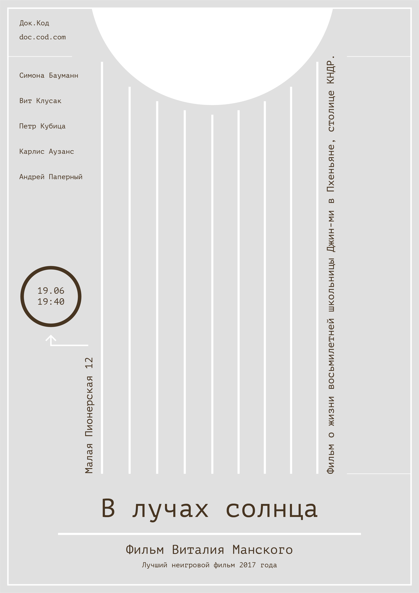
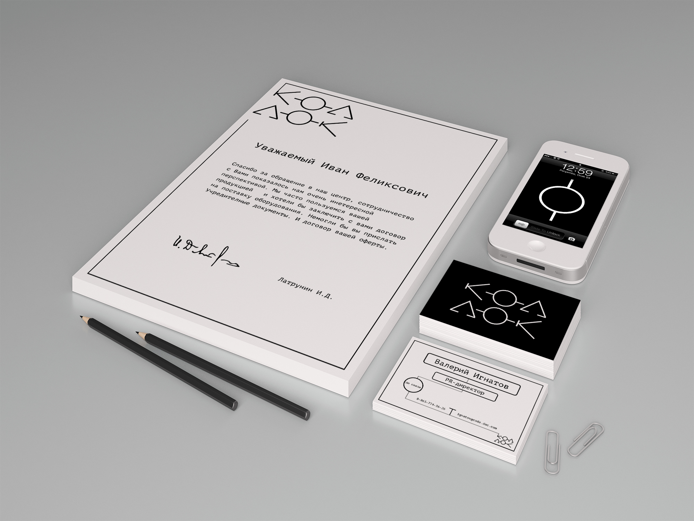

Логика взаимосвязей
Основой стиля стала метафора блок-схемы. Схематизация, к которой прибегают режиссёры необходима, чтобы убрать лишние детали. Наш мозг устроен так, что мы составляем простые схемы. Док. жанр может разрушать привычные схемы, а также создавать новые.

Поиск логотипа
Искать было интересно, т.к. нужно было найти баланс
между ясностью прочтения и сохранением элементов из блок-схемы.
Итоговый вариант

Стиль в среде

 Посмотреть историю создания проекта
Посмотреть историю создания проекта